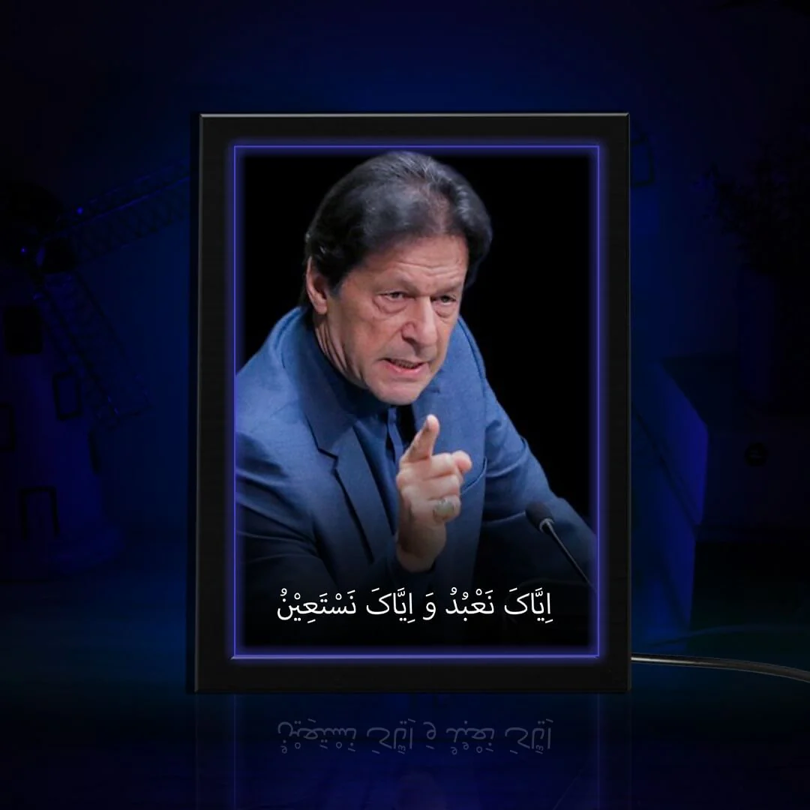

Imran Khan is a leader who dreamed of turning Pakistan into a welfare state like Madinah. He raised his voice against every corrupt leader and fought for the rights of the people. Today, he is in jail because of his honesty, truthfulness, and courage. Yet, millions of people still wait eagerly to see and hear him. He is not just a politician — he is a symbol of hope.
Visit PTI Official Website: Click
Imran Khan on Facebook
Imran Khan on Twitter (X)
Imran Khan on Instagram